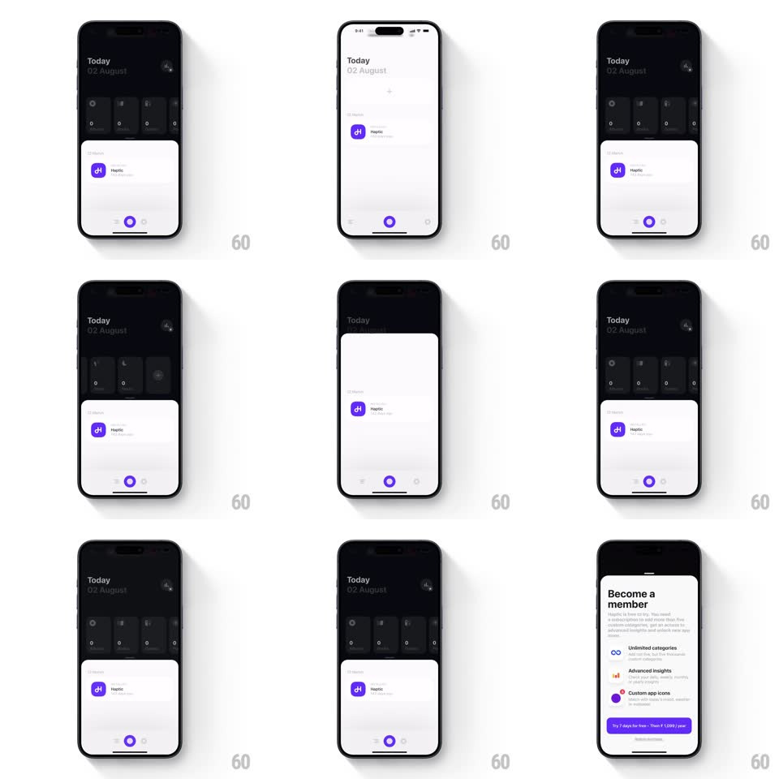

Media
Frame-by-frame

Rebuild this interaction 1:1: Haptic's onboarding top sheet - drag the white content card downward and it peels away to reveal the next colored step card living underneath it.

Rebuild this interaction 1:1: Haptic's onboarding top sheet - drag the white content card downward and it peels away to reveal the next colored step card living underneath it.
## Integration
Integration: stack-agnostic spec - springs given as stiffness/damping, timed motions as duration + curve; map every value to your framework and animation library of choice.
## Scene
A stack of onboarding step cards: the white "Welcome to Haptic" intro on top, with the next steps beneath - purple ("Add habits and activities that you want to track"), orange ("Enable Health access..."), dark gray ("Start adding events to your timeline") - each with a step badge, body copy, and a pill button (Choose, Enable, Get started). "Maybe later" sits at the bottom.
## Motion spec
Pattern: drag-down background reveal.
- Drag the front card down: it tracks the finger 1:1, its top corners rounding more as it travels (12px to 28px), revealing the card beneath which scales up from 0.94 to 1 and brightens from 70% to full as it's uncovered; a sliver of the third card peeks at the bottom edge (translateY parallax 0.3x).
- Release past 35%: the front card slides away down (accelerating, 350ms, with a light haptic thud) and the revealed card springs into the front position (spring ~340/22, overshoot ~8px).
- Release below 35%: the card springs back up (spring ~420/26) and the background card settles back down.
- Each card's content staggers in when it becomes front: badge pops (scale 0.6 to 1, spring ~460/22), then copy slides up (translateY 12px, 250ms), then its button fills.
- The colored edge strips of waiting cards are visible at the screen edges - the stack depth is always readable.
## Calibration
- The reveal is the interaction: the next card must be visibly present (dimmed, scaled) before any drag starts.
- Stack never shows more than three layers deep; deeper cards queue offscreen.
## Reduced motion
Cards crossfade on button tap; no drag reveal.
## Don't miss
- Cards are color-coded per step (white, purple, orange, dark gray) - the palette is the progress indicator.
- The front card keeps its own content static while dragging; only position/corners animate.